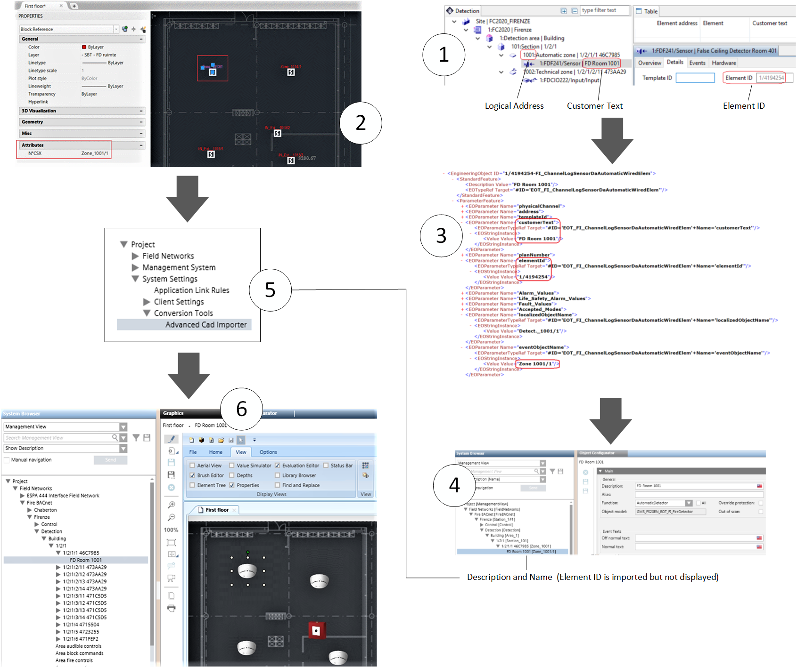
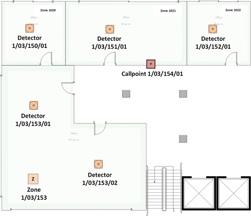

Advanced CAD Importer Application Examples
CAD Blocks and Fire Objects Matching Example
The automatic detector placement on graphics is based on matching the fire objects represented by CAD Blocks with the corresponding fire objects imported into Desigo CC from the fire panel configuration. More specifically, you need to establish a correspondence between a CAD Block Attribute and a Desigo CC object property that you can select from: Description, Name and Element ID.
The relevant Desigo CC object properties are set during the import process as follows:
- Description: The customer text label of fire objects. Assuming for example the customer text in the FS20 fire panels, the corresponding Description Value field is imported from the SiB-X file. For example, FD Room 1001.
- Name: Imported in Desigo CC based on the logical structure of fire objects. For example, Zone_1001/1. In FS20 fire panels, this value may be different in different countries due to BDV customizations. Check the exact name definitions of your system in System Browser.
- Element ID (FS20): Imported from the configuration file: Element ID Value field in SiB-X files. For example, 1/4194254. This is an internal number used by FS20 to identify the fire objects.
Based on the fire panel configuration, you have three ways to configure the CAD drawings and then match the Desigo CC configuration. The CAD Block Attribute must contain one of the following:
- The fire object label or customer text. This will match the Desigo CC Description property.
- The logical address (for example Zone_1001/1). This will match the Desigo CC Name property.
- The FS20 Element ID, imported into Desigo CC, but not displayed.
Advanced CAD Import Example for FS20
The following illustrates an advanced CAD import with an FS20 configuration. Referring to the image below:
- In the FS20 configuration tool, you define the Customer Text of fire objects. The Element ID and the Logical Address are determined by the tool.
- In the CAD drawing, you configure the Block Attribute to match one of the fire object properties. For example, the Logical Address (Zone_1001/1).
- You import the SiB-X file with the FS20 configuration into Desigo CC.
- In Desigo CC, you can find the customer text in the object Description. The object Name corresponds with the Logical Address. The Element ID is also imported but not shown on the user interface.
- You run the Advanced CAD Importer, and import the First Floor CAD file.
- The match occurs and the fire object symbol is placed on the Desigo CC graphic in the correct position over the imported CAD drawing.
NOTE: The importer can handle a partial match as it provides for options to add and/or remove characters before comparing the strings. See Select the Object Blocks and Identification Attributes.

Layer and Depth Import Options Example
The following example shows the Advanced CAD Importer options about layers and depth in the Desigo CC graphic output.
For the purpose of this example, in the CAD drawing layout illustrated here below, we assume the Advanced CAD Importer can identify and import CAD blocks corresponding to the following fire objects:
- Five automatic smoke/heat detectors:
- 1/03/150/01
- 1/03/151/01
- 1/03/152/01
- 1/03/153/01
- 1/03/153/02 - One manual callpoint:
- 1/03/154/01 - One fire zone (1/03/153), parent object of two detectors:
- 1/03/153/01
- 1/03/153/01
NOTE: Fire zones are part of the logical structure of the fire system and typically not included in CAD drawings.
However, in this example, we want to show the behavior of the importer in case the parent zones are also imported along with detectors.

The Desigo CC graphic output layers and depths can vary depending on the options selected in the wizard (see Select Graphics Options).
In the Layers and Depths Options sub-step, you can select one of the following:
- Case 1: Automatic layer/depth creation Option
- Selecting this option results in the following:
- A Background layer with the CAD image.
- A Detectors depth that includes the layers for the imported object types/subtypes: automatic detectors layer (for detectors 1/03/150/01, 1/03/151/01, 1/03/152/01, 1/03/153/01, and 1/03/153/02) , manual callpoints layer (for callpoint 1/03/154/01), and automatic zones layer (for zone 1/03/153).
- A Zones depth that includes the layers for the added parent objects: automatic zones layer (for zones 1/03/150, 1/03/151, and 1/03/152), and manual zones layer (for manual zone 1/03/154), and section 1/03 (parent of zone 1/03/153). - Case 2: All objects in one layer/depth Option
- Selecting this option results in the following:
- A Background layer with the CAD image.
- A <Detectors> depth that includes the layer for the imported objects and all their parent objects: in our example, all detectors and callpoints, their parent zones (both imported and added as parent) as well as section 1/03, added as parent of zone 1/03/153. Depth and layer names can be customized. - Case 3: Separate layer/depth for parents Option
- Selecting this option results in the following:
- A Background layer with the CAD image.
- A <Detectors> depth that includes a single layer for all imported objects. In our example, all detectors/callpoints and the zone 1/03/153. Depth and layer names can be customized.
- A <Zones> depth that includes a single layer for the added parent objects: automatic detection zones 1/03/150, 1/03/151,1/03/152, and manual callpoint zone 1/03/154, and section 1/03. Depth and layer names can be customized.